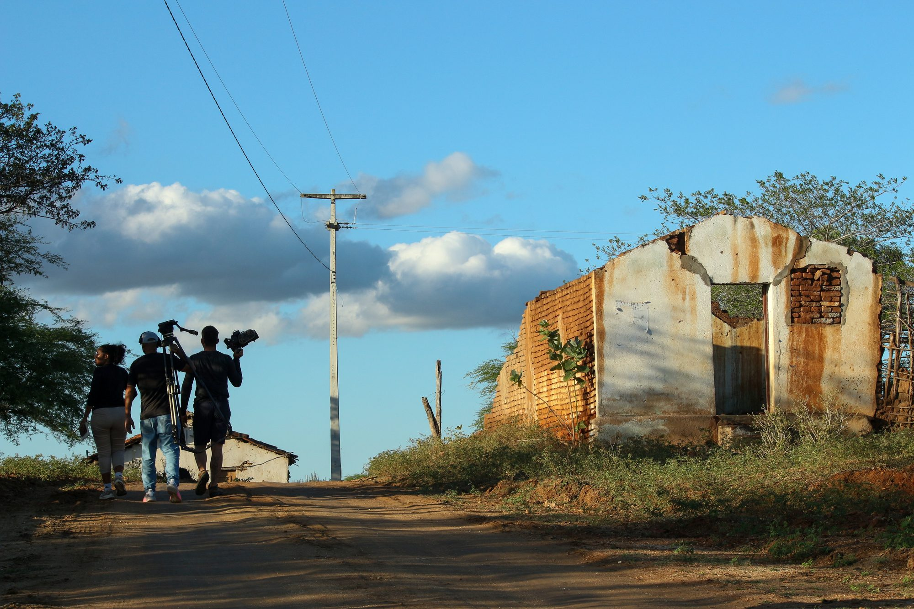
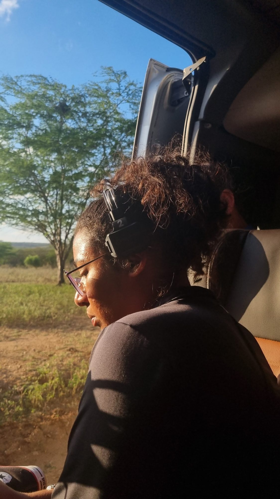
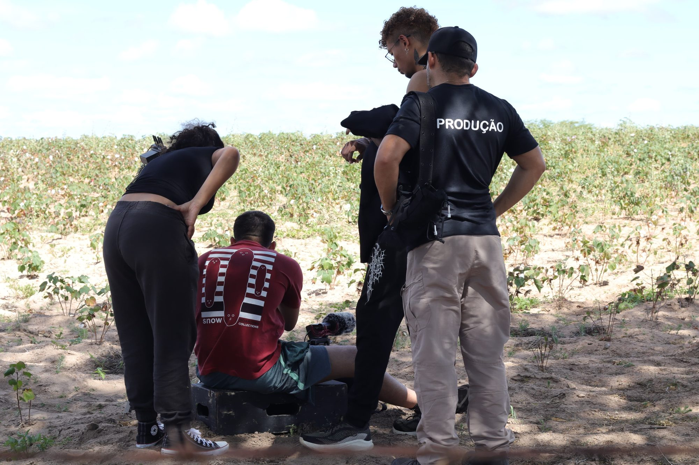

13ª
Mostra de Cinema de Gostoso
Na produção do festival desde a 10ª edição, e atualmente na 13ª.

Realizadora audiovisual · Rio Grande do Norte
Cinema de território, feito ao ar livre.

01 Sobre
Clara Leal iniciou sua trajetória no audiovisual a partir das oficinas de cinema promovidas pela Mostra de Cinema de Gostoso, projeto social voltado à formação de jovens da região. Em 2019, dirigiu seu primeiro curta-metragem, Ando me Perguntando, uma obra de ficção.
Desde então, transitou entre diferentes formatos e linguagens: República LGBT (2019), reportagem documental; e os documentários Papa-Jerimum (2021), Nós (2023) e Fim de Jogo (2024). Atualmente, desenvolve seu primeiro longa-metragem documental.
02 Filmografia
Primeiro curta-metragem dirigido por Clara, nascido das oficinas de cinema da Mostra de Cinema de Gostoso.
Clara Leal e Rubens dos Anjos, participantes da terceira edição do Globo Lab Profissão Repórter, mostram como jovens resolveram deixar as casas em que moravam após sofrerem rejeição dos pais pela escolha da sexualidade.
Em São Miguel do Gostoso (RN), eleitores e torcedores fervorosos não se limitam a votar nas eleições municipais: eles arriscam bens valiosos, confiando cegamente na vitória de seus escolhidos.

03 Em desenvolvimento
04 Bastidores
05 Atuação
13ª
Na produção do festival desde a 10ª edição, e atualmente na 13ª.
02
Para estudantes do ensino médio em municípios do Mato Grande (RN), incentivando a criatividade e o cinema de território.
05
Entre ficção, reportagem e documentário, com o primeiro longa documental em desenvolvimento.
Realização
Clara Leal
Território
São Miguel do Gostoso · RN
Linguagens
Ficção · Documentário · Reportagem